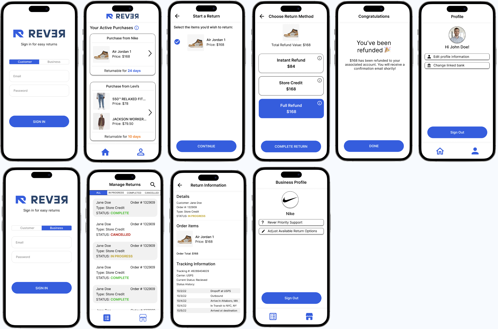

Designing a Mobile App for Rever
Overview
I completed this project in a group with three other people. It taught me valuable lessons in how to approach a collaborative project. The iterative nature of this exercise also taught me that designs need not be perfect on the first attempt: it is better to show others your design early and iterate off feedback.
Approximately 305 million start-ups are created annually. In this project we aimed to mock up a design for a start-up's concept. In hopes of achieving this goal, we created a mobile interactive interface for Rever, a start-up aimed at revamping the return process.
Pre-Design Thinking
Context About the Startup
Rever is an up and coming startup with the goal of making returns easier. Rever makes returns easier by consolidating returns into one location and allowing consumers to return their products in 2 clicks. By offering different refund methods, you can get an instant refund if you need it rather than waiting for the long process of the return.
Potential Users
Our interface mainly impacts small to medium sized businesses that work in sales, as well as consumers of all ages and socioeconomic statuses, as this service provides an ease of life experience.
In our pre-design vision for the app, our users—both customers and businesses—can easily manage refunds with mobile phones. Users can sign in as a customer or business on the login page. Customers can select returnable items they would like to return in one click and have an option for instant refund, full refund, and refund through store credit. Businesses can manage all refunds from all customers in one page and can visualize refunds completed, in-progress, and canceled. The simple interface makes it more accessible, enhancing memorability.
First Round of Design
Sketches
After we brain-stormed what we wanted to achieve with our design, we each made a sketch or wireframe expanding on one of our ideas.
Low-Fidelity Wireframe
It proved to be somewhat challenging to combine our ideas into a single design. Each of us had a different idea of what the best way forward for the app was, and combining these ideas was contradictory rather than complimentary. Information was duplicated which would undoubtly confuse the users. We decided it was best to iron out some of the problems this created in future steps of the iterative design process. Our combined low-fidelity wireframe is shown below.
High-Fidelity Wireframe
Similar the low-fidelity wireframe, we differed in opinion when deciding on a design language for our high-fidelity prototype. I personally felt our choice of colors caused some contrast issues. We all recognized that participating in the group critique would influence our design in the correct direction, regardless of personal opinion. Interact with our design.
Group Critique
Context
As part of this project we were to present our mock up after the first round of design. This allowed us to get feedback from our peers, and help us see problems with our design that we were too close to it to recognize. We were also lucky enough to get feedback from an industry expert.
Critique Summary
Critiques of the Customer flow:
- Homepage has a lack of hierarchy. Confusion of functionality and where to look.
- Confusing Menu bar interface (many thought the home button was selected in the profile page and vice versa).
- Not enough item information: is it a group order? How much time will it take for a full refund?
Critiques of the Business flow:
- Color scheme was difficult to identify. Some text was not noticeable or left ambiguous with color selections.
- Many could not idenitfy that red order means cancelled, yellow means in review, and green means completed
- Lack of logout button to switch between customer and business profiles.
- Filtering of the order was not intuitive (seems more intuitive that most recent orders are at the top of the list).
Critiques from the industry expert, Niko from Figma.
- Unclear which button is selected (profile or home).
- Unclear what the refund page is (2nd screen of the HiFi mockup).
- Lack of contrast in colors that can lead to accessibility issues.
Second Round of Design
Implementing Feedback
Armed with the feedback from the group critique, we scrapped our first design, and redesigned the app from the ground up. We made sure to use a more uniform color palette to avoid contrast issues, and avoid functionality duplication on our pages. We also paid much more attention to making the prototype functional, as this aids developers when trying to translate this design into a real application. Interact with our prototype!
User Testing
Context
After our second of design we were tasked with giving our design to potential users to get genuine feedback about the usability of our design. We created a set of tasks and subtasks we wanted users to complete in order to evaluate this usability.
Instructions for User Testers
The following is the set of instructions we gave to our user testers:
- You are a busy and stressed customer with a shopping history and want to make quick returns. On the login screen, sign in as a customer. *in this mockup, you do not need to actually fill in the email and password input spaces.
- You've recently initiated a refund on a MacBook and you want to check on how the refund is going. From the home page, find the purchase/refund information for the MacBook to see if it has been received by the business!
- Return the pair of jeans for an Instant Refund, they don't fit and you need a new pair ASAP.
- It turns out you're also a business owner who's hoping to easily keep track of refunds. Sign out of your customer profile and log in again, but this time from the Business option. *again, you do not need to actually fill in the email and password input spaces.
- You want to review only the refunds in progress right now. Luckily, you notice that you can filter your options from the top menu bar. Filter the dashboard so that you only see the refunds that are IN PROGRESS, and click on one of them to see more information on how the refund is going.
User Testing Videos
Post Test Questions
After our user testers completed their tests, we asked them the following questions:
- As a customer, was returning the product with the different return options understandable?
- As a customer, would you rather have speed in returning or more precision (such as extra confirmation screens)?
- As a customer, did you locate your item easily? Would you like your items grouped in an order or individual items?
- As a business owner, were all refunds easily manageable (easy to identify the status of the refund)?
Result Analysis
All users were given the same task of returning the Air Jordan with some subtasks listed above. Users reported that refund options were easily understandable and that locating items were easy too. All users agreed that grouping and sorting the items and orders made the interface more usable and accessible. All users prioritized speed over precision, which is in line with the startup's mission and our prototype's goal (to make refunds quicker and easier). Even the business profile seemed intuitive to the users, too, as they all completed the subtasks successfully and stated that "the color coding for status and ability to filter made it easier." Although there seemed to be soem confusion about the sign-in page and the meaning of icons, overall the user testing went as expected as all users completed the task without much difficulty.
Potential Changes Based on Feedback
- More clearly label what purchases have started the 'refund process' (from the MacBook refunding task)
- Explain or emphasize the two different customer and business login options on sign-in page
Conclusion
Key Takeaways
Completing this project taught me valuable lessons in how design work functions in a group environment. It also taught me the importance of getting outside critiques for your designs, as this will illuminate problems you did not consider yourself. The importance of user testing also stood from this project, as it made us much more confident in our design and revealed valuable areas of improvement. Finally, it taught me that design must be catered to your target audience because it is extremely difficult to create an interface optimal for everyone; it is crucial to understand the raget user group and how their demographics impact your design decisions.